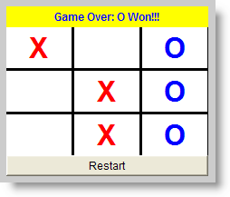
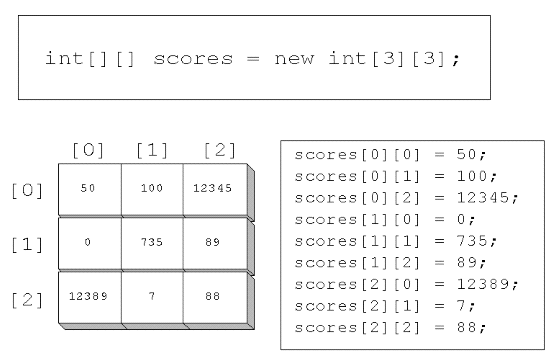
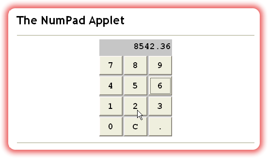

Welcome back to more arrays! In this lesson, you'll examine a potpourii of different array topics and applications.You'll learn:
- How to process the array of command-line arguments that are passed to every application.
- How to use arrays to write methods that take a variable number of arguments.
- How to create and process multi-dimensional arrays.
Along with each of these topics, there's one last homework assignment that will give you a little more practice with the topic.
Command-line Arguments
One of the most common uses of String arrays
is when you create an application and you need to pass information
into that application when you run it.
With applications, both GUI and console-mode, arguments
are passed to your program via the operating system shell
command line,
similar to those you supply when you use javac to compile
your Java code from the terminal window.
When you manually compile your code, you type in the word
javac, and then follow that with the name
of the program you want to compile, like this:
 The program file name you supply, VoteCounter.java in the screenshot
shown here, is an example of a command line argument.
The program file name you supply, VoteCounter.java in the screenshot
shown here, is an example of a command line argument.
Processing the Command Line
As you'll recall, when a Java application begins, it starts with the
main() method. The main() method is passed
a single argument from the operating system, an array of
String, traditionally called args.
(Of course, you can name it anything you like.)
Inside your main() method, you can check the field
args.length to see how many arguments were passed.
If no arguments were passed to your application, then
args.length will be 0.
Since args.length tells you how many arguments there are, the
situation practically begs for a for loop,
right? Here's an simple console mode application that you can use to
see how this works.
// Args.java
public class Args
{
public static void main(String[] args)
{
for (int i = 0; i < args.length; i++)
System.out.println(args[i]);
}
}
Since Args is a console mode application, it doesn't need to
extend anything, it just needs to have a main()
method. Inside the main() method, the program simply loops
through the array (args) and prints each command
line argument to the console.
Here's what the program looks like as it runs:
 As you can see, Java separates each word into a separate element of the
As you can see, Java separates each word into a separate element of the
args array: the first word becomes element 0, the second
becomes element 1, and so on. When you enclose several words in quotes,
like "Three Four" in the example, the entire phrase is treated as a single
element of the array.
Remember: command-line arguments are passed as
Strings, not numbers. That means that
if you want to process numbers, you'll need to convert
the numbers, using a method like Integer.parseInt().
Variable-Length Parameter Lists
Variable-length parameter lists are a feature introduced with Java 5 that allows you to create methods that take, as the name suggests, a variable number of parameters. Suppose, for instance, that you wrote a method that returned the maxium of two doubles, like this:
public double max(double a, double b)
{
return a < b ? b : a;
}
This is fine for two numbers, but when you need to find the maximum of three numbers, or four, you'll need to write overloaded methods for each of those cases, like this:
public double max(double a, double b) { ... }
public double max(double a, double b, double c) { ... }
public double max(double a, double b, double c, double d) { ... }
Of course, the code in each method is going to be different, to handle the differing number of arguments. Variable-length parameter-lists allow you to write a single method that can be used in all of those cases. Here's how it works.
Parameter Definition
A variable-length formal parameter is really a way of defining a special kind of array parameter. When defining the formal parameter, use an ellipsis (three dots) instead of the square brackets you'd use for a normal array declaration.
Here's an example using the max() method:
public double max(double ... nums) { ... }
Inside the max() method, you treat nums
as a regular array of double. That means that you can use the
standard array-processing algorithm for finding the largest
value, and then return that, as shown here.
public double max(double ... nums)
{
double largest = nums[0];
for (double n : nums)
if (n > largest)
largest = n;
return largest;
}
Using the Method
The big difference between a variable-length parameter method, and one that takes a regular array as a formal parameter, is that, for the variable-length variety, Java will create the array for you; with the "regular" version, its up to the caller to create the array before calling the method.
Here's an example:
int d1 = max(10, 20); // 2 arguments
int d2 = max(10, 20, 30, 50, 70); // 5 arguments
Constructors can also be written to accept variable numbers of parameters. You can combine a variable-length parameter with regular parameters, but the variable-length parameter must come last. You can't have more than one variable-length parameter per method.
2D Arrays
When you declare an array,
the elements can be of any type. You can create an array of
Button references like this:
Button[] buttons = new Button[5];
and, you can create an array int variables like this:
int[] pieces = new int[10];
 The variables
The variables buttons and pieces are
both array variables that refer to a collection of
Button references or to a collection of
int values.
Java also allows you to create array variables that refer, not
to Button objects or int values, but
to other arrays. These are called multidimensional
arrays. Since we'll only be working with two dimensions in
this class, I'll refer to these as 2D arrays, although
you can have as many dimensions as you like.
The easiest way to think of a 2D array is to think of rows and columns. A grid or a spreadsheet is a useful mental model. In reality, though, a 2D array is composed of arrays of arrays. You'll see what that really looks like shortly.
To create a 2D array, just extend the syntax you've already learned for 1D arrays. For instance, in the example shown here:
int[] d1 = new int[5];
the variable d1 is an int[]
(int array) that refers to 5 int
values.
Since that's true, perhaps you can figure out what the code shown here means:
int[][] grid;
The variable grid is an array variable,
just the like the variable d1 in the earlier
example. But, each of the elements contained in the
grid array is not an int, but an
int[]— that is, an int array variable.
Allocating Memory
Of course, just like with 1D arrays, an array variable doesn't
actually "point to" anything, until you allocate some memory
by using new and an array constructor. The
syntax for doing this with a 2D array is very similar to that
used for a single-dimension array:
int[][] grid = new int[2][4];
This piece of code creates a variable (grid), that
refers to a two-element array. Each element in that two-element
array (grid[0] and grid[1]) is
an int[], that is, an int array
variable, as shown here:

grid[0] and grid[1]
refer to separate four-element int arrays.
The illustration should help you to visualize
the relationships between the various pieces.
Using 2-D Elements
Rather than thinking of 2-D arrays as shown in the previous illustration, (even though that is how the arrays are actually implemented in memory), it is usually easier to think of them as an actual grid composed of rows and columns, labeled starting at 0, like this:

To access an individual element, instead of providing one subscript enclosed in brackets, you supply two subscripts, each enclosed in its own set of brackets. (You cannot put both subscripts in the same set of brackets, as you can do in Pascal).
- The first subscript represents the row in the array.
- The second subscript represents the column of the element you want.
Remember that both subscripts are zero based.
C/C++ Note : In Java, subscripts do
not "wrap around" as they do in some other languages such
as C. You cannot access scores[1][0] by using the
notation scores[0][3]. That's because, in reality,
you are accessing an individual array variable, as shown in the
earlier illustration.
Initializing 2D Arrays
You can initialize 2D arrays by using loops and storing values
in each element, just as you can with a one-dimensional array.
Of course, when accessing 2D arrays, you'll usually use a
pair of nested for loops with indexes for
the row and column.
Just as with 1D arrays, you can create and initialize a 2D array in one statement by providing a list of initial values in an initializer list. When you do this, you supply a separate initializer list for each of the subarrays. Each of these subarray initializers is enclosed in its own set of braces, and separated from the others by commas.
 Here's an example that creates a 4 x 3 array of
Here's an example that creates a 4 x 3 array of String
that imitates the layout of a standard numeric keypad.
When you use automatic initialization like this, you must
remember to match the number of brackets and initializers.
If you have only a single bracket after String[]
your program won't compile.
Processing 2D Arrays
As I previously mentioned, you'll normally process a 2D array by
using a pair of nested for loops with
indices for the rows and columns. This is pretty straightforward.
Here's some code that processes the array keyCaps,
from the last section, to create a set of Button:
for (int row = 0; row < 4; row++)
for (int col = 0; col < 3; col++)
add(new Button(keyCaps[row][col]));
Of course, if you want to avoid hard-coding the sizes of the
rows and columns, Java allows you to make a perfectly generic
traveral loop by using each "sub-array"'s length
field like this (assuming an array named a):
for (int r = 0; r < a.length; r++)
for (int c = 0; c < a[r].length; c++)
// Process a[r][c] here
Notice that each row in a 2D array can be treated as a
1D array in its own right. Thus for the inner loop in this
example, (when processing the columns), we could test against
a[r].length, because each subarray has its own
length field.
Here is the source code for an applet NumPad.java which uses this code to create a simple numeric keypad. You can run the applet by clicking the link in this sentence, or, you can just take my word for it, and look at the nice picture shown here:

2D Arrays and Methods
The way that Java 2D arrays are implemented makes it very easy to write methods which take 2D arrays as arguments. You just have to remember to declare the formal arguments using two brackets instead of one.
Here's an example of a method that takes a 2D array of
double and returns the sum of all the numbers.
//The sum2D() Method
double sum2D(double[][] ar)
{
double sum = 0.0;
for (int r=0; r < ar.length; r++)
for (int c=0; c < ar[r].length; c++)
sum += ar[r][c];
return sum;
}
Returning 2D Arrays
Just as with 1D arrays, you can return 2D arrays from your methods. If, for instance, you're certain that every row in your 2D array has the same number of elements, you could return a 2D array containing the sum of each row and column like this:
//The sum2DAR() Method
double[][] sum2DAR(double[][] ar)
{
double[][] ans;
ans[0] = new double[ar.length]; // rows
ans[1] = new double[ar[0].length];
for (int r=0; r < ar.length; r++)
{
for (int c=0; c < ar[r].length; c++)
{
ans[0][r] += ar[r][c]; // Add each row total;
ans[1][c] += ar[r][c]; // Sum of each column
}
}
return ans;
// ans[0] contains sum of each row
// ans[1] contains sum of each col
}
Ragged Arrays
The array returned from sum2DAR() is called a
ragged array, because the two 1D arrays
ans[0] and ans[1] normally will
have different lengths. If you pass a 2D array that has
20 columns and only 5 rows, then the returned array will
have 5 elements in the the first array ans[0]
and 20 elements in the second array ans[1].
To create a ragged array, you have to allocate space for
each row of the 2D array independently, as is done inside
sum2DAR() with this code:
double[][] ans;
ans[0] = new double[ar.length];
ans[1] = new double[ar[0].length];
Coming Up Next ...
That's it for arrays! Now let's turn our attention to one last topic you've already met. In Unit 10 you learned how to throw exceptions; in the next lesson, you'll learn how to handle them.